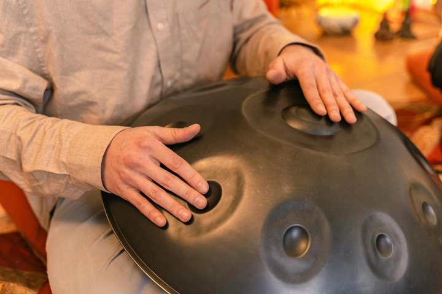
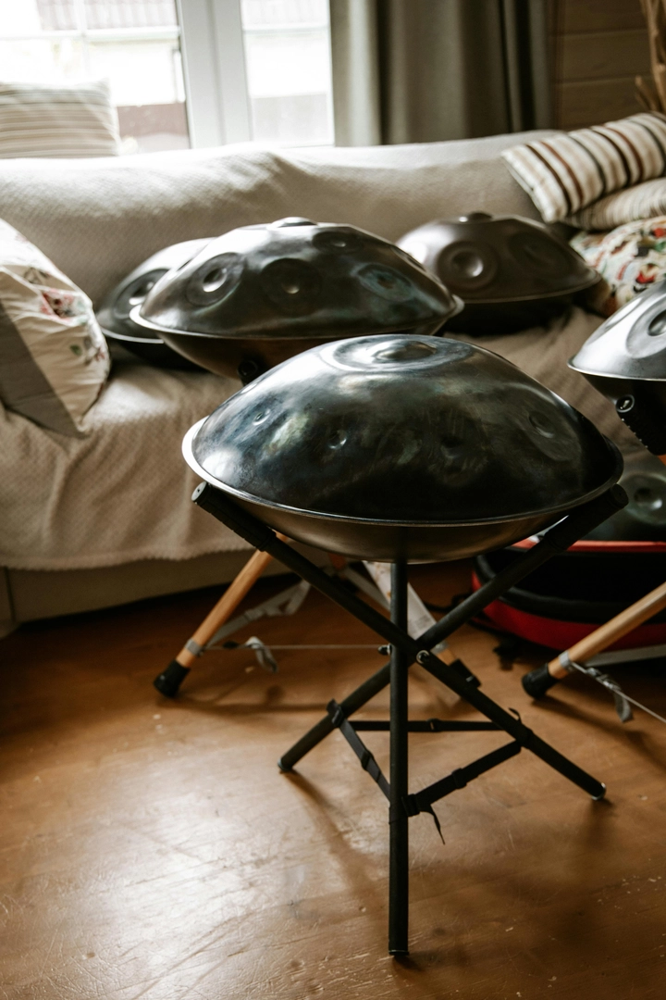
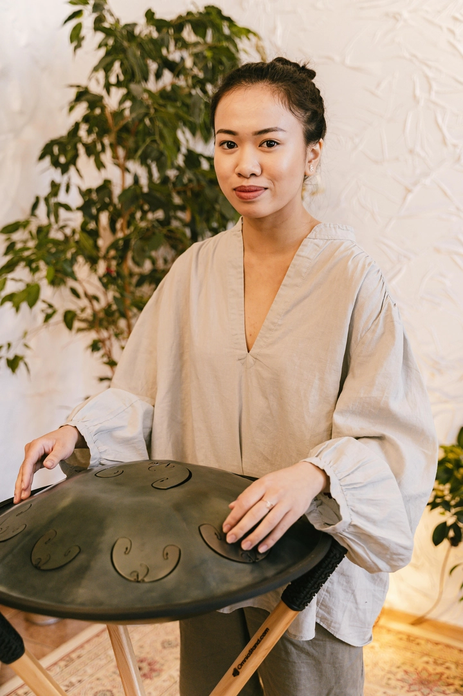

Handpan: loại nhạc cụ gõ độc đáo kết hợp giữa nghệ thuật và thiền định
Là một loại nhạc cụ hiện đại, có tuổi đời còn rất non trẻ, handpan nhanh chóng chinh phục trái tim của những người yêu âm nhạc trên khắp thế giới. Với hình dáng tròn như chiếc đĩa bay và âm thanh vang lên trong trẻo, sâu lắng, handpan mang đến cảm giác vừa huyền bí vừa thiền định. Không cần dây, không cần điện, chỉ bằng những cú chạm nhẹ của đôi tay, người chơi có thể tạo ra cả một thế giới âm thanh – từ nhẹ nhàng, du dương cho đến mạnh mẽ, thôi thúc. Chính sự tối giản trong cấu trúc nhưng phong phú trong biểu cảm khiến handpan trở thành biểu tượng mới của nghệ thuật âm thanh đương đại.
Hôm nay hãy cùng TrithucWorld đi tìm hiểu về nhạc cụ độc đáo này
1. Handpan là gì? – Âm nhạc của sự tĩnh lặng và tự do
Handpan là một loại nhạc cụ gõ kim loại hình tròn, có cấu trúc giống chiếc UFO nhỏ, được chơi bằng tay. Khi gõ nhẹ vào bề mặt, handpan tạo ra âm thanh ngân vang, trong trẻo và thiền định, gợi cảm giác thư giãn và an yên.
Điểm đặc biệt của handpan là mỗi vùng trên mặt trống được tạo tần số riêng, tương ứng với một nốt nhạc, giúp người chơi có thể tạo nên âm điệu hài hòa mà không cần kỹ thuật quá phức tạp.
Handpan ra đời từ đầu thế kỷ 21, nhưng nhanh chóng lan rộng trong cộng đồng yêu âm nhạc và thiền định trên toàn thế giới – từ các nghệ sĩ đường phố châu Âu đến những buổi hòa nhạc trị liệu âm thanh ở châu Á.

2. Nguồn gốc của Handpan – Hậu duệ của Hang Drum
Handpan bắt nguồn từ Hang Drum, một phát minh của hai nghệ nhân người Thụy Sĩ – Felix Rohner và Sabina Schärer, thuộc công ty PANArt ở Bern.
Hang Drum xuất hiện vào năm 2000, lấy cảm hứng từ Steelpan của Trinidad & Tobago (một loại trống thép vùng Caribe) và các nhạc cụ cổ truyền châu Á, châu Phi.
Tên gọi “Hang” trong tiếng Thụy Sĩ nghĩa là “tay”, bởi toàn bộ âm thanh được tạo ra chỉ bằng các chuyển động tay tự nhiên, không dùng dùi.
Từ đó, các nghệ nhân trên khắp thế giới đã học hỏi, phát triển thêm và gọi chung dòng nhạc cụ này là Handpan – nghĩa là “trống chơi bằng tay”.
3. Cấu tạo và âm thanh đặc trưng của Handpan
Một chiếc handpan thường gồm hai mảnh thép hình vòm ghép lại với nhau. Phần trên có một nốt trung tâm gọi là “Ding”, xung quanh là 8–10 vùng nốt khác nhau, mỗi vùng tạo ra một cao độ riêng.
Âm thanh của handpan có thể mô tả bằng ba đặc điểm:
-
Ngân vang và cộng hưởng lâu – như tiếng chuông pha lẫn âm trống.
-
Tạo cảm giác an lành, sâu lắng, thường dùng trong thiền, yoga, hoặc âm nhạc trị liệu.
-
Âm điệu tự nhiên – người chơi không cần học nhạc lý sâu vẫn có thể tạo nên những giai điệu du dương.
Âm thanh của handpan khiến nhiều người ví nó như tiếng nói của linh hồn, vừa cổ xưa vừa tương lai, vừa mộc mạc vừa kỳ diệu.
4. Cách chơi Handpan – Khi âm nhạc trở thành thiền
Để chơi handpan, người nghệ sĩ thường ngồi bắt chéo chân, đặt nhạc cụ lên đùi. Dùng đầu ngón tay, lòng bàn tay, hoặc mu bàn tay để gõ nhẹ.
Không giống trống thông thường, handpan không cần dùng lực. Chỉ cần chạm nhẹ đúng điểm, âm thanh đã vang lên.
Cảm giác chơi handpan gần như là thiền động – người chơi tập trung hoàn toàn vào nhịp thở, cảm xúc, và chuyển động tay.
Nhiều người mô tả trải nghiệm này là “trò chuyện với chính mình bằng âm thanh”, và thật vậy – handpan không chỉ là nhạc cụ, mà còn là công cụ chữa lành cho tâm hồn.

5. Các loại nhạc cụ liên quan đến Handpan
Mặc dù handpan là “ngôi sao” của dòng nhạc cụ gõ hiện đại, nhưng nó có mối liên hệ chặt chẽ với nhiều nhạc cụ tương tự – cùng chia sẻ tinh thần tự do và thiền định.
a. Hang Drum – Tiền thân huyền thoại
Là “cha đẻ” của handpan, Hang Drum có thiết kế và âm thanh tương tự, nhưng do được cấp bản quyền và sản xuất giới hạn nên giá cực cao – từng có thời điểm hơn 5.000 USD (~125 triệu VND) cho một chiếc.
Hiện nay, Hang Drum chính hãng của PANArt gần như trở thành đồ sưu tầm nghệ thuật.
b. Steel Tongue Drum – Trống lưỡi thép
Nhỏ gọn hơn handpan, loại trống này có các khe cắt (giống “lưỡi”) tạo ra âm thanh khi gõ.
Âm sắc của nó nhẹ hơn, thích hợp cho người mới bắt đầu hoặc trẻ em học nhạc thiền. Giá dao động chỉ từ 2 – 6 triệu VND, dễ tiếp cận hơn nhiều so với handpan.
c. Kalimba – Đàn ngón tay châu Phi
Còn gọi là “thumb piano”, Kalimba tạo âm bằng cách bấm các thanh kim loại mảnh.
Âm thanh trong trẻo, du dương, phù hợp để đệm hát hoặc chơi solo nhẹ nhàng. Kalimba hiện là một trong những nhạc cụ handmade bán chạy nhất trên thế giới.
d. Cajon – Hộp gõ nhịp Latin
Cajon có nguồn gốc từ Peru, là một hộp gỗ rỗng mà người chơi ngồi lên và gõ vào mặt trước.
Âm thanh mạnh, trầm, thường dùng trong nhạc Acoustic hoặc Flamenco, nhưng cũng được nhiều nghệ sĩ handpan kết hợp để tạo nền nhịp vững chắc.
e. Tongue Pan và Rav Vast
Hai biến thể lai giữa handpan và steel tongue drum, tạo âm thanh sâu hơn và dễ chơi hơn.
Rav Vast đặc biệt được ưa chuộng nhờ âm lượng lớn và khả năng cộng hưởng mạnh, thích hợp cho biểu diễn ngoài trời hoặc ghi âm chuyên nghiệp.
6. Handpan trong đời sống hiện đại – Từ nghệ thuật đến trị liệu
Ngày nay, handpan không chỉ xuất hiện trong âm nhạc đường phố, mà còn trong yoga, trị liệu tâm lý, giáo dục và du lịch âm nhạc.
Ở nhiều quốc gia, handpan được dùng trong sound healing (trị liệu âm thanh) – giúp giảm căng thẳng, cải thiện giấc ngủ, và hỗ trợ thiền định.
Các nghệ sĩ như Daniel Waples, Yuki Koshimoto hay Kabeção đã góp phần đưa handpan trở thành hiện tượng toàn cầu, truyền cảm hứng cho hàng triệu người qua YouTube và các festival nghệ thuật quốc tế.
Tại Việt Nam, cộng đồng người chơi handpan đang phát triển nhanh, đặc biệt trong giới trẻ yêu thiền, nghệ thuật và âm nhạc tự do. Các workshop về handpan thường được tổ chức ở Hà Nội, Đà Lạt, TP.HCM.
7. Giá của Handpan và cách chọn mua
Giá handpan phụ thuộc vào chất lượng thép, âm sắc và thương hiệu.
-
Handpan cơ bản: khoảng 15 – 25 triệu VND, phù hợp người mới.
-
Handpan cao cấp (concert-level): có thể lên đến 80 – 150 triệu VND.
Một số thương hiệu uy tín: Ayasa Instruments, Yishama, RAV Vast, Spacedrum, Saraz…
Khi chọn mua, bạn nên nghe thử âm vang, độ cân bằng giữa các nốt, và cảm giác chạm tay. Mỗi chiếc handpan là một cá thể độc nhất, không có cái nào giống hoàn toàn cái nào.
8. Handpan – Biểu tượng của nghệ thuật và tâm linh đương đại
Handpan không chỉ là một nhạc cụ – nó là nghệ thuật sống chậm trong thế giới hiện đại.
Trong thời đại mà âm nhạc điện tử và nhịp sống nhanh chiếm ưu thế, tiếng handpan như lời nhắc về sự yên bình, cân bằng và kết nối với nội tâm.
Không cần sân khấu, không cần micro, chỉ cần một không gian yên tĩnh – bạn có thể thả hồn cùng từng nốt ngân.
Và chính trong khoảnh khắc đó, âm nhạc trở lại với ý nghĩa nguyên thủy nhất của nó: chữa lành và kết nối con người.
9. Handpan có dễ chơi và dễ tiếp cận không?
Handpan không phải là nhạc cụ quá khó chơi, nhưng để chơi hay và cảm xúc thì lại là cả một hành trình. Với cấu trúc âm thanh được sắp xếp theo thang âm cố định, người mới bắt đầu có thể dễ dàng tạo ra những giai điệu nghe “ổn” ngay từ những lần đầu chạm tay.
Tuy nhiên, điểm khó của handpan nằm ở khả năng kiểm soát lực đánh, nhịp điệu và cảm xúc — những yếu tố đòi hỏi sự tập trung và luyện tập đều đặn. Một người chơi giỏi handpan không chỉ biết gõ đúng nốt, mà còn biết “kể chuyện” bằng âm thanh, hòa quyện giữa nhịp thở và tiếng ngân của kim loại.
Vì vậy, có thể nói handpan dễ chơi nhưng khó giỏi, phù hợp với cả người mới muốn thư giãn lẫn những ai muốn khám phá chiều sâu âm nhạc.

10. Học chơi Handpan ở đâu Việt Nam?
-
Có rất nhiều khoá học online uy tín như MasterTheHandpan – cung cấp các bài học từ cơ bản đến nâng cao, bạn học bất cứ lúc nào. Khoá học này được cộng đồng đánh giá khá cao.
- Nếu bạn là người có năng khiếu âm nhạc và đã quen với một số nhạc cụ trước đây, bạn có thể học chơi miễn phí thông qua các kênh dạy chơi handpan tren Tiktok và Youtube.
-
HandpanDojo là một nền tảng với video hướng dẫn, phép chơi nhịp điệu, grooves và kỹ thuật chơi handpan cho mọi cấp độ.
-
Bắt đầu nên học: cách đặt nhạc cụ, cách đánh tay nhẹ nhàng, nhận biết nốt, làm quen với thang âm. Sau đó chuyển sang sáng tác, luyện tai, phối hợp tay trái – tay phải.
-
Tập đều đặn, theo lịch; kết hợp nghe nhiều bản handpan để làm quen “âm vang” và cảm giác đánh đúng điểm.
11. Mua Handpan ở đâu?
Một số địa chỉ mua Handpan uy tín ở Việt Nam mà bạn có thể tham khảo như:
-
Handpan Việt Nam (Hà Nội): chuyên các dòng handpan nhập khẩu và đặt hàng theo yêu cầu, bạn có thể tới thử âm và nghe demo thực tế trước khi mua.
-
Saigon Handpan Gallery (TP. HCM): cửa hàng có trưng bày nhiều mẫu handpan từ các thương hiệu quốc tế, hỗ trợ bảo hành và đánh âm miễn phí tại chỗ.
-
Đà Lạt Handpan Studio (Đà Lạt): phù hợp nếu bạn đang tìm trải nghiệm nghe trực tiếp và thử âm trong không gian yên tĩnh, có hỗ trợ chuyển hàng toàn quốc.
Khi đến những địa chỉ này, bạn nên nghe thử trực tiếp, kiểm tra âm vang, độ cân bằng các nốt và hỏi rõ chế độ bảo hành để đảm bảo chất lượng sản phẩm.
12. Kết luận
Handpan là một hiện tượng âm nhạc đặc biệt của thế kỷ 21 – nơi công nghệ, nghệ thuật và tâm linh giao thoa.
Nó không ồn ào, không phô trương, nhưng chạm sâu vào cảm xúc người nghe.
Từ Hang Drum, Steel Tongue Drum, đến Kalimba hay Cajon, tất cả cùng kể một câu chuyện: âm nhạc không chỉ để nghe – mà để cảm và để sốn